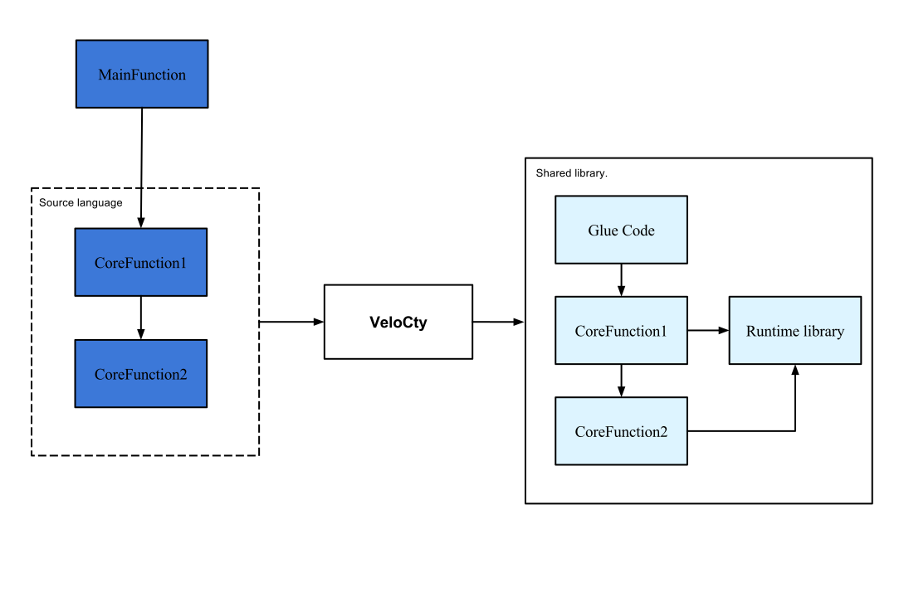

class: center, middle # .title[Velo<span style="color: blue">C</span>ty] <br/><br/> .subtitle[An optimising static compiler for Python and MATLAB] <br /> ###.right[Sameer Jagdale] --- class: center # Scientific Languages <table cellpadding="20"> <tr> <td> </td> <td> <img src="NumPy.png" alt="NumPy"></td> <td> <img src="matlab.jpg" alt="Matlab" ></td> </tr> </table> -- .left[ - Allow easy prototyping. - Have a gentle learning curve. ] -- - .left[However, performance is poor compared to statically compiled.] --- class: center # Solution 1: Rewrite code in C++/Fortran -- <br/> <br/>  -- <br/> .left[ - Declare types and dimensions of arrays. - Memory management. - Increased code size - Steeper learning curve. ] --- class: center #Solution 2: Auto-compilation of whole programs to C++/Fortran .left[ - Many constructs cannot be compiled ahead of time. ``` matlab function time = mainFunction() A = rand(3,3); X = load('dataFile.mat'); Y = Y + 10; time = coreFunction(A,X) end; ``` ] --- class: center #Solution 2: Auto-compilation of whole programs to C++/Fortran .left[ - Many constructs cannot be compiled ahead of time. ``` matlab function time = mainFunction() A = rand(3,3); * X = load('dataFile.mat'); Y = Y + 10; time = coreFunction(A,X) end; ``` How do we determine type and dimensions of X and therefore that of Y? ] --- #Solution 2: Auto-compilation of whole programs to C++/Fortran .left[ - Many constructs cannot be compiled ahead of time. ``` matlab function time = mainFunction() A = rand(3,3); X = load('dataFile.mat'); Y = Y + 10; * time = coreFunction(A,Y) end; ``` If coreFunction is computationally intensive, why not compile only that ? ] --- # Agenda 1. Introduction 2. Execution Model 3. Compilation pipeline 4. Glue code generation 5. Results .hidden[Ulterior motive : Make talk so boring that everyone will be too sleepy to ask questions.] --- # .center[Introduction] <br/> - VeloCty is an optimizing compiler for array-based languages to C++. - Currently supports Matlab and Python's NumPy library. - Implemented using the Velociraptor framework. - Supports parallelism using OpenMP. - Also generates glue code. - Provides language-specific run time library. - About 1.1 to 400 times faster than Mathworks' Matlab. --- # .center[Execution Model] --- # .center[Execution Model]  --- # .center[Execution Model] --- # .center[Compilation Model] --- #.center[Example Code] A Matlab implementation of the Babai nearest plane algorithm. ```matlab function mcpi_p(N,P) result=0; for (temp=1:P) myRes=0; for temp2 = 1:(N/P) x= rand(1); y= rand(1); if ((x*x + y*y )<=1) myRes=myRes+1; end end result=result+myRes; end end ``` --- #.center[Example Code] Generated C++ code of the Babai nearest plane algorithm. ``` C void mcpi_p(double N, double P) { /*Data Declarations */ result = 0; long P1 = static_cast<long>(P); long N1 = static_cast<long>(N); for(temp=1;temp<=P1;temp=temp + 1) { myRes = 0; for(temp2=1;temp2<=(N1 / P1);temp2=temp2 + 1) { x = (rand()); y = (rand()); if((((x * x) + (y * y)) <= 1)) { myRes = (myRes + 1); } } result = (result + myRes); } } ``` --- # .center[Generating Glue code] - Required for interfacing generated C++ code with the source language. - Mex API used for Matlab. - Python C API for Python. - Glue code is automatically generated. - Mex Glue code generator implemented as part of this thesis. - PyVrir's generator used for Python. --- # .center[Generating Glue code] Example glue code. Generated for babai benchmark. ``` C #include<stdlib.h> #include<stdio.h> #include<mex.h> #include"matrix_ops.hpp" #include"babaiImpl.hpp" void mexFunction(int nlhs, mxArray *plhs[], int nrhs,const mxArray *prhs[]) { mxArray ** rhs = const_cast<mxArray**>(prhs); VrArrayF64 inputData0 = getVrArrayF64(rhs[0]); VrArrayF64 inputData1 = getVrArrayF64(rhs[1]); VrArrayF64 retVal = babai(inputData0,inputData1); plhs[0] = mxCreateNumericArray(retVal.ndims,retVal.dims, mxDOUBLE_CLASS, mxREAL); mxSetData(plhs[0],retVal.data); } ``` --- # .center[Generating Glue code] Example glue code. Generated for babai benchmark. ``` C #include<stdlib.h> #include<stdio.h> #include<mex.h> #include"matrix_ops.hpp" #include"babaiImpl.hpp" *void mexFunction(int nlhs, mxArray *plhs[], * int nrhs,const mxArray *prhs[]) { mxArray ** rhs = const_cast<mxArray**>(prhs); VrArrayF64 inputData0 = getVrArrayF64(rhs[0]); VrArrayF64 inputData1 = getVrArrayF64(rhs[1]); VrArrayF64 retVal = babai(inputData0,inputData1); plhs[0] = mxCreateNumericArray(retVal.ndims,retVal.dims, mxDOUBLE_CLASS, mxREAL); mxSetData(plhs[0],retVal.data); } ``` Entry point function. --- # .center[Generating Glue code] Example glue code. Generated for babai benchmark. ``` C #include<stdlib.h> #include<stdio.h> #include<mex.h> #include"matrix_ops.hpp" #include"babaiImpl.hpp" void mexFunction(int nlhs, mxArray *plhs[], int nrhs,const mxArray *prhs[]) { mxArray ** rhs = const_cast<mxArray**>(prhs); * VrArrayF64 inputData0 = getVrArrayF64(rhs[0]); * VrArrayF64 inputData1 = getVrArrayF64(rhs[1]); VrArrayF64 retVal = babai(inputData0,inputData1); plhs[0] = mxCreateNumericArray(retVal.ndims,retVal.dims, mxDOUBLE_CLASS, mxREAL); mxSetData(plhs[0],retVal.data); } ``` --- # .center[Generating Glue code] Example glue code. Generated for babai benchmark. ``` C #include<stdlib.h> #include<stdio.h> #include<mex.h> #include"matrix_ops.hpp" #include"babaiImpl.hpp" void mexFunction(int nlhs, mxArray *plhs[], int nrhs,const mxArray *prhs[]) { mxArray ** rhs = const_cast<mxArray**>(prhs); VrArrayF64 inputData0 = getVrArrayF64(rhs[0]); VrArrayF64 inputData1 = getVrArrayF64(rhs[1]); * VrArrayF64 retVal = babai(inputData0,inputData1); plhs[0] = mxCreateNumericArray(retVal.ndims,retVal.dims, mxDOUBLE_CLASS, mxREAL); mxSetData(plhs[0],retVal.data); } ``` --- # .center[Generating Glue code] Example glue code. Generated for babai benchmark. ``` C #include<stdlib.h> #include<stdio.h> #include<mex.h> #include"matrix_ops.hpp" #include"babaiImpl.hpp" void mexFunction(int nlhs, mxArray *plhs[], int nrhs,const mxArray *prhs[]) { mxArray ** rhs = const_cast<mxArray**>(prhs); VrArrayF64 inputData0 = getVrArrayF64(rhs[0]); VrArrayF64 inputData1 = getVrArrayF64(rhs[1]); VrArrayF64 retVal = babai(inputData0,inputData1); * plhs[0] = mxCreateNumericArray(retVal.ndims,retVal.dims, mxDOUBLE_CLASS, mxREAL); * mxSetData(plhs[0],retVal.data); } ``` --- # .center[Run time libraries] - Supports structures which can hold array data and meta-data. - Supports various operations on array. - matrix multiply, addition etc. - most operations implemented using a BLAS library. - Intel MKL used for matlab and OpenBLAS for python. - Supports builtins. - Trigonometric operations, memory allocation etc. - Naive implementation - Supports Array bounds checks. - Can also grow array if onLhs flag is set. --- # .center[VrArrays] - Structures for supporting arrays in C++. - Contain pointer to data as well as number of dimensions and size of each dimensions. - Pointer to data allows no-fuss shape modification. ```C typedef struct VrArrayF64 { double *data; dim_type* dims; int ndims; } typedef struct VrArrayCF64 { double complex *data; dim_type* dims; int ndims; } ``` --- # .center[Optimisations] 3 different optimisations - Array bounds check removal. - Phase 1 : Remove redundant bounds checks. - Phase 2 : Remove checks for affine indices. --- # .center[Optimisations] 3 different optimisations - Array bounds check removal. - Phase 1 : Remove redundant bounds checks. - Phase 2 : Remove checks for affine indices. - Remove redundant memory allocations. ```C * drz = BlasDouble::scal_minus(Rz,vr_temp30); BlasDouble::scal_minus(Rz,vr_temp30,&drz); ``` --- # .center[Optimisations] 3 different optimisations - Array bounds check removal. - Phase 1 : Remove redundant bounds checks. - Phase 2 : Remove checks for affine indices. - Remove redundant memory allocations. ```C drz = BlasDouble::scal_minus(Rz,vr_temp30); * BlasDouble::scal_minus(Rz,vr_temp30,&drz); ``` --- # .center[Optimisations] 3 different optimisations - Array bounds check removal. - Phase 1 : Remove redundant bounds checks. - Phase 2 : Remove checks for affine indices. - Remove redundant memory allocations. ```C drz = BlasDouble::scal_minus(Rz,vr_temp30); BlasDouble::scal_minus(Rz,vr_temp30,&drz); ``` - OpenMP for parallel for loops. - Naive implementation. - User has to provide list of shared variables. --- # .center[Results] Results with bounds checks turned OFF. --- # .center[Results] Results with bounds checks turned ON. --- # .center[Results] Comparison of C++ code with and without checks. --- # .center[What is left] - Implement boundchecks optmisations and parallel code generation - Python benchmarks. --- class:middle,center #.center[Thank You!!]